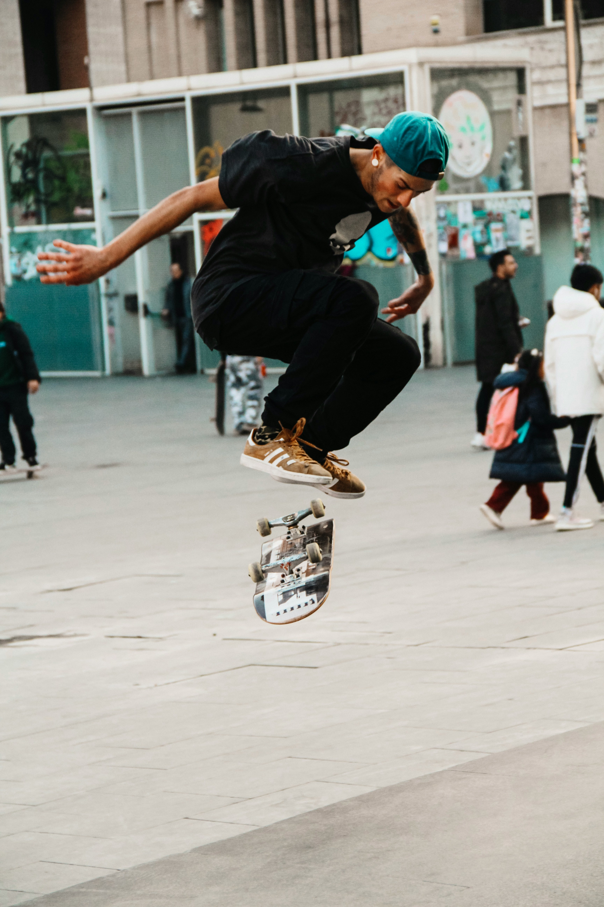

Urban Legends
The Untamed History of Street Skating

Carved in Concrete
 Street skating didn’t ask for permission it carved its legacy into curbs, handrails, and city plazas. What started as sidewalk surfing in post-war California evolved into a global movement defined by creativity, defiance, and the raw poetry of motion. This site is a tribute to that journey: the tricks, the spots, the skaters, and the culture that turned pavement into playground.
From the first ollie popped on asphalt to the iconic video parts that reshaped skateboarding’s soul, we trace the evolution of street skating through decades of innovation and rebellion. You’ll find stories of legendary spots like LOVE Park and MACBA, deep dives into trick origins, and snapshots of the gear that shaped generations. It’s not just history—it’s mythology written in grip tape and concrete dust.
Whether you’re a lifelong skater, a curious newcomer, or just someone who respects the art of turning architecture into adrenaline, this is your portal into the roots of street skating. No contests, no gloss—just the grind, the grit, and the glory.